Провести анализ для данных infmort (статистика по детской смертности по разным странам в зависимости от региона, дохода и того, является ли страна экспортером нефти). Нужно построить зависимость детской смертности от всего остального и проинтерпретировать результаты. Разумеется, хороший график не помешает.
library(lattice)
library(latticeExtra)## Loading required package: RColorBrewerlibrary(MASS)
library(e1071)
df <- read.table("infmort.txt")
df <- na.exclude(df)
df$region <- factor(df$region, labels = sort(unique(df$region)))
head(df) ## region income mortality oil
## Australia Asia 3426 26.7 no oil exports
## Austria Europe 3350 23.7 no oil exports
## Belgium Europe 3346 17.0 no oil exports
## Canada Americas 4751 16.8 no oil exports
## Denmark Europe 5029 13.5 no oil exports
## Finland Europe 3312 10.1 no oil exportsdim(df)## [1] 101 4Сразу прологарифмируем income так как он очччень сильно перекошен (а также денежный признак, о чем упоминалось).
Было:
hist(df$income, breaks=20)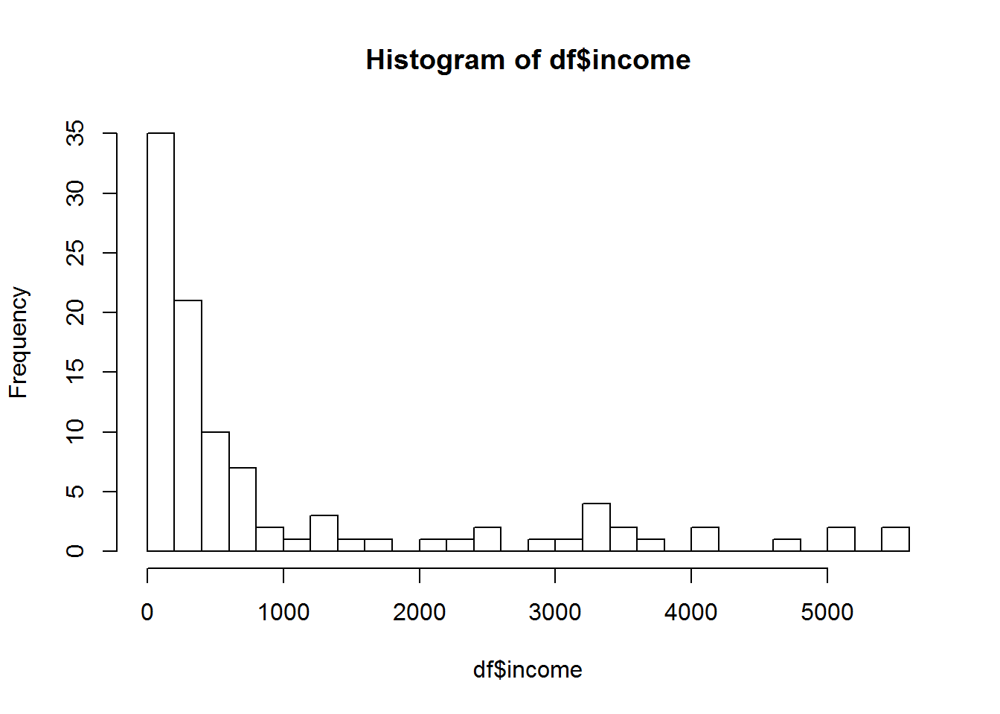
Стало:
df$income <- log(df$income)
hist(df$income, breaks=20)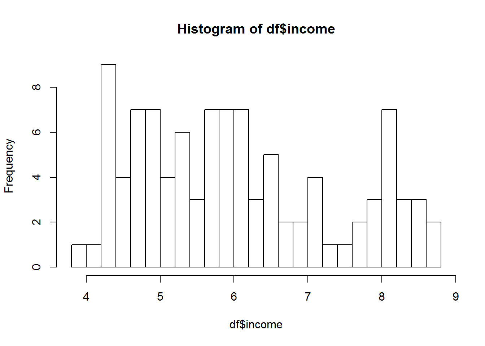
Поизучаем то, что у нас есть.
splom(df) 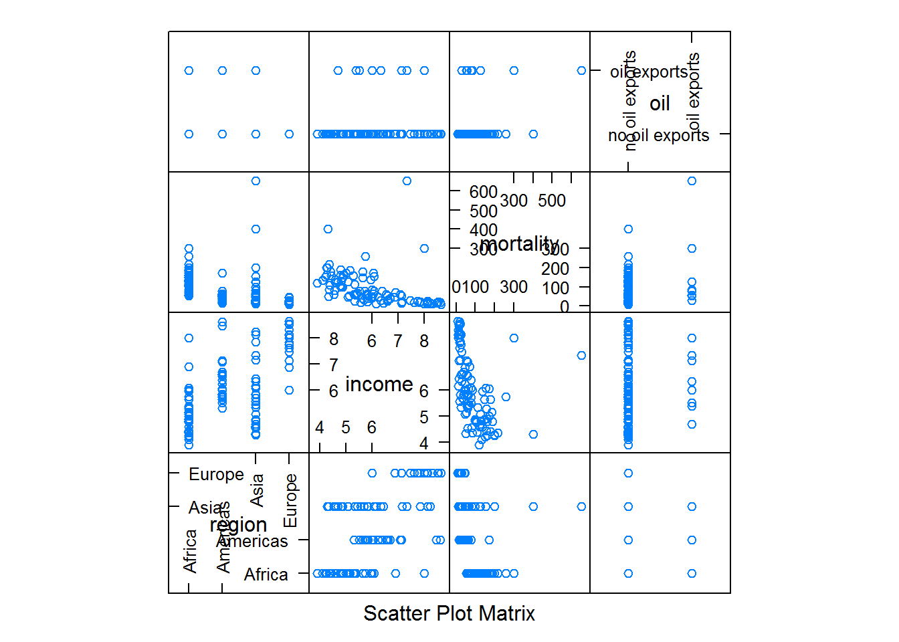
bwplot(~mortality | region * oil, df )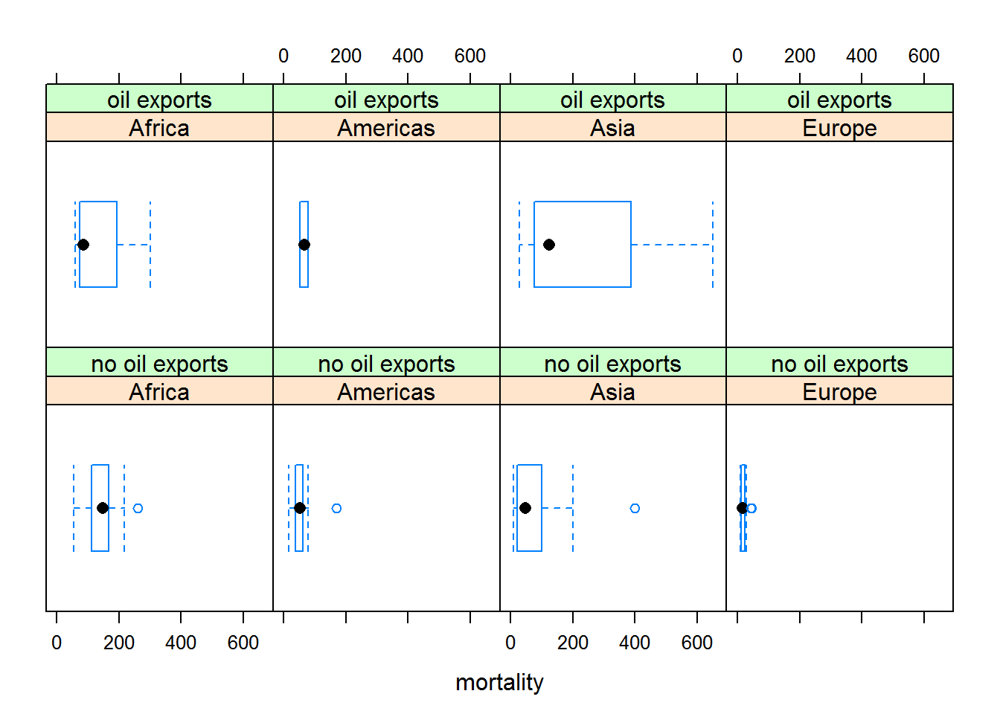
marginal.plot(df, data = df, groups = oil, auto.key = list(lines = TRUE, title = "oil", cex.title = 2, columns = 2))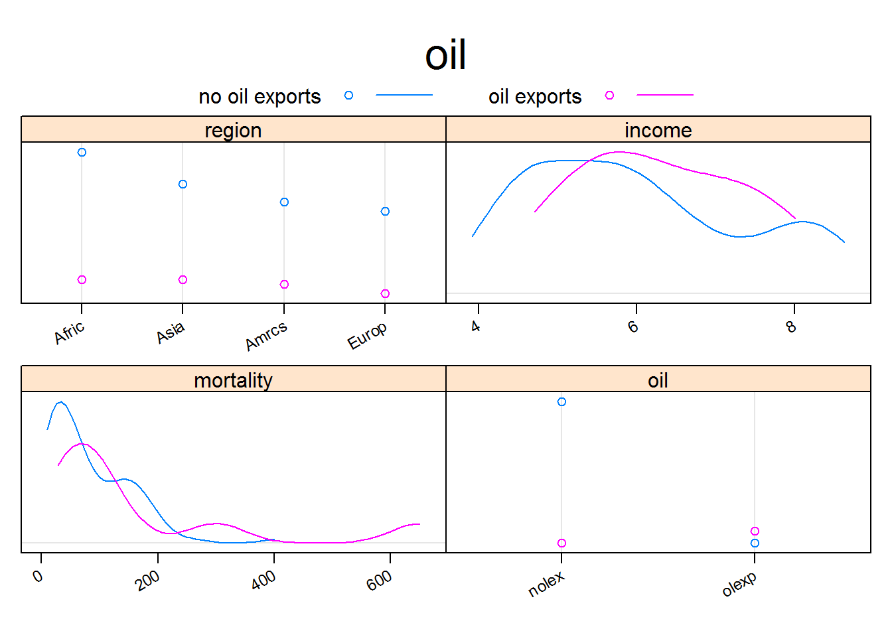
Посмотрев внимательнее мы понимаем, что экспортеров нефти очень, очень мало, причем доходы в них не превышают примерно 3,5 тысячи в год, тогда как в не-экспортерах доходы поднимаются гораздо выше. Более того, солидная часть графика для mortality для 400-600 есть только для экспортеров нефти.
histogram(~oil | region, df) 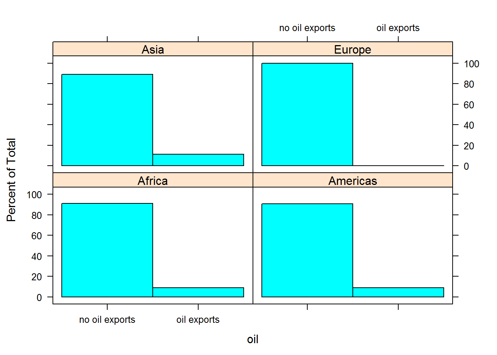
marginal.plot(df, data = df, groups = region, auto.key = list(lines = TRUE, title = "region", cex.title = 2, columns = 4))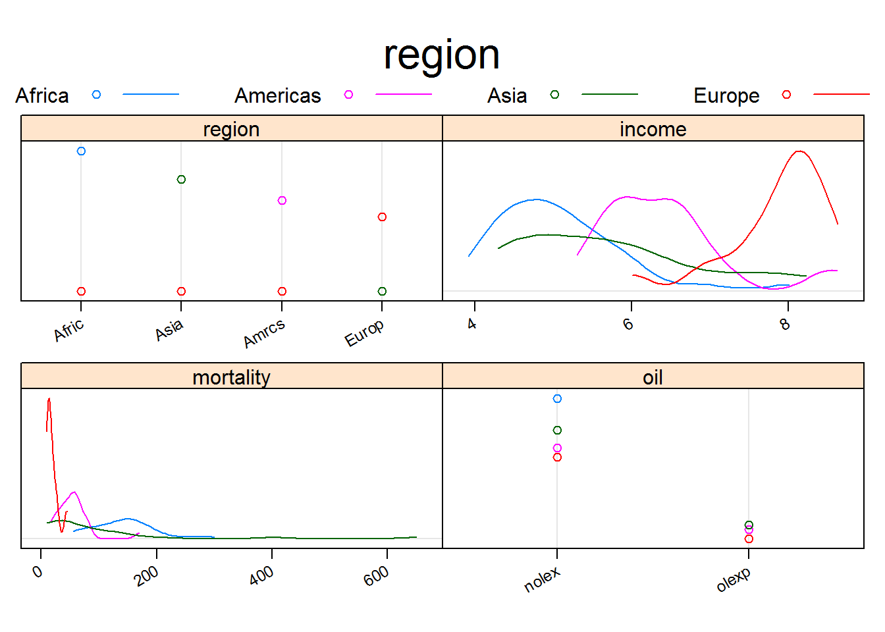
bwplot(mortality / 1000 ~ income | region, df)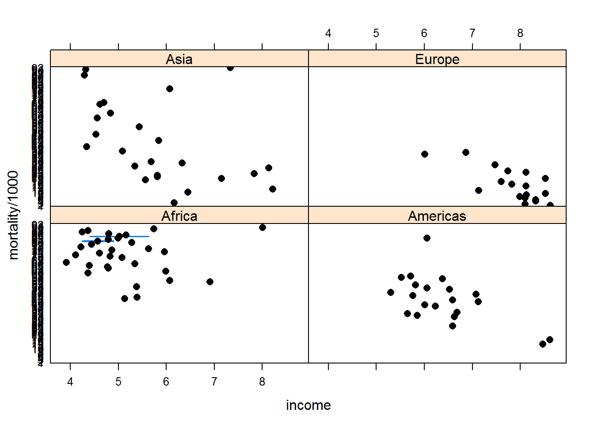
Проверим тривиальное утверждение, что богатые страны имеют лучшее медобслуживание:
xyplot(mortality ~ income, df)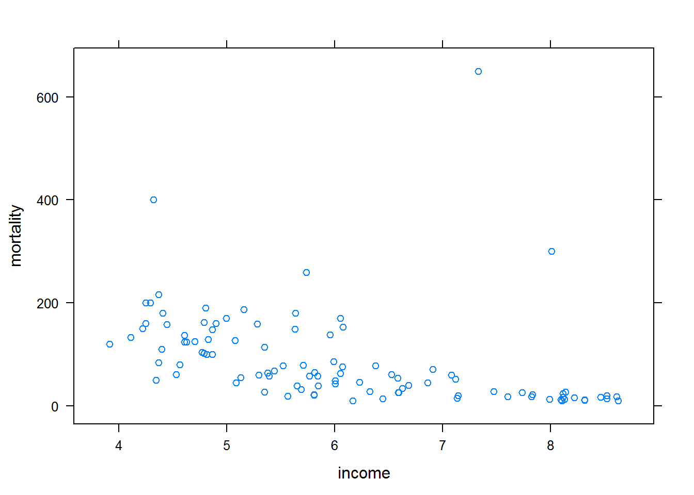
Не очень похоже на то, чтобы это можно было аппроксимировать прямой. Смертность с падением доходов растет очень быстро. Я думаю, стоит попробовать экспоненциальную зависимость. Поэтому прологарифмируем mortality также.
df$mortality <- log(df$mortality)
xyplot(mortality ~ income, df, type=c('r', 'p'))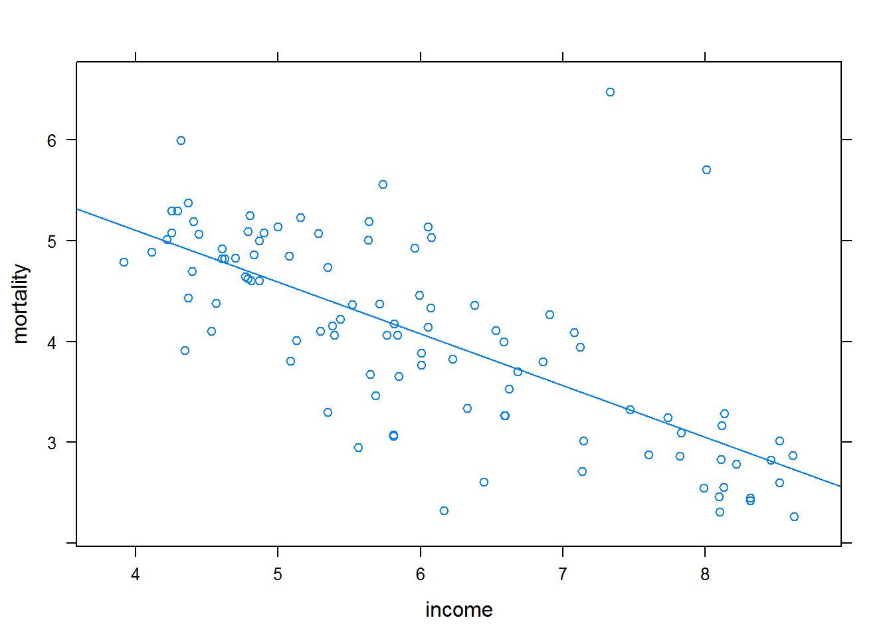
Вот теперь это выглядит хорошо.
Начнём “в лоб” – попробуем построить прямую зависимость от всего:
l <- lm(mortality ~ income + oil + region, data = df)
summary(l)##
## Call:
## lm(formula = mortality ~ income + oil + region, data = df)
##
## Residuals:
## Min 1Q Median 3Q Max
## -1.4208 -0.3062 -0.0331 0.3091 2.4897
##
## Coefficients:
## Estimate Std. Error t value Pr(>|t|)
## (Intercept) 6.55210 0.34969 18.737 < 2e-16 ***
## income -0.33985 0.06658 -5.104 1.70e-06 ***
## oiloil exports 0.64021 0.22505 2.845 0.005444 **
## regionAmericas -0.54984 0.18449 -2.980 0.003657 **
## regionAsia -0.71292 0.15757 -4.524 1.75e-05 ***
## regionEurope -1.03383 0.25672 -4.027 0.000114 ***
## ---
## Signif. codes: 0 '***' 0.001 '**' 0.01 '*' 0.05 '.' 0.1 ' ' 1
##
## Residual standard error: 0.5908 on 95 degrees of freedom
## Multiple R-squared: 0.6464, Adjusted R-squared: 0.6278
## F-statistic: 34.73 on 5 and 95 DF, p-value: < 2.2e-16stepAIC(l)## Start: AIC=-100.5
## mortality ~ income + oil + region
##
## Df Sum of Sq RSS AIC
## <none> 33.156 -100.505
## - oil 1 2.8243 35.980 -94.248
## - region 3 8.9476 42.103 -82.375
## - income 1 9.0918 42.247 -78.029##
## Call:
## lm(formula = mortality ~ income + oil + region, data = df)
##
## Coefficients:
## (Intercept) income oiloil exports regionAmericas
## 6.5521 -0.3398 0.6402 -0.5498
## regionAsia regionEurope
## -0.7129 -1.0338Попробуем по регионам, все же Европу и Африку было бы некорректно сравнивать:
d <-subset(df, region == "Africa")
afr <- lm(mortality ~ income + oil, data = d)
summary(afr)##
## Call:
## lm(formula = mortality ~ income + oil, data = d)
##
## Residuals:
## Min 1Q Median 3Q Max
## -0.89190 -0.23165 0.06299 0.22940 0.92873
##
## Coefficients:
## Estimate Std. Error t value Pr(>|t|)
## (Intercept) 4.78509 0.50728 9.433 1.27e-10 ***
## income 0.02225 0.10139 0.219 0.828
## oiloil exports -0.18825 0.29624 -0.635 0.530
## ---
## Signif. codes: 0 '***' 0.001 '**' 0.01 '*' 0.05 '.' 0.1 ' ' 1
##
## Residual standard error: 0.4187 on 31 degrees of freedom
## Multiple R-squared: 0.01338, Adjusted R-squared: -0.05027
## F-statistic: 0.2103 on 2 and 31 DF, p-value: 0.8115stepAIC(afr) ## Start: AIC=-56.33
## mortality ~ income + oil
##
## Df Sum of Sq RSS AIC
## - income 1 0.008445 5.4442 -58.281
## - oil 1 0.070808 5.5066 -57.894
## <none> 5.4358 -56.334
##
## Step: AIC=-58.28
## mortality ~ oil
##
## Df Sum of Sq RSS AIC
## - oil 1 0.065293 5.5095 -59.876
## <none> 5.4442 -58.281
##
## Step: AIC=-59.88
## mortality ~ 1##
## Call:
## lm(formula = mortality ~ 1, data = d)
##
## Coefficients:
## (Intercept)
## 4.882xyplot(mortality ~ income, data = d, type = c("r", "p"))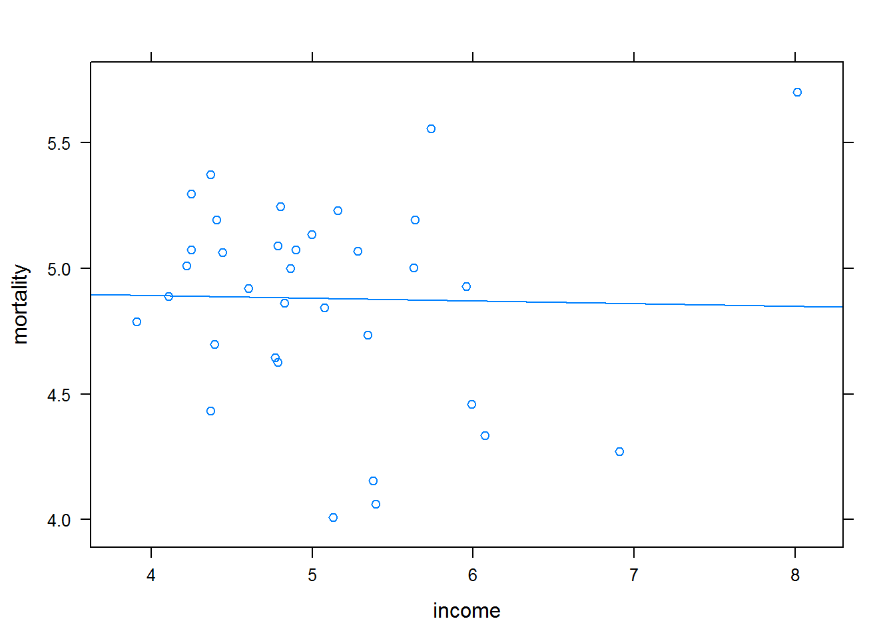
В Африке все данные одинаковые: смертность большая, доход низкий, поэтому никаких разумных закономерностей.
# no oil exporters in Europe
eur <- lm(mortality ~ income, data = subset(df, region == "Europe"))
summary(eur)##
## Call:
## lm(formula = mortality ~ income, data = subset(df, region ==
## "Europe"))
##
## Residuals:
## Min 1Q Median 3Q Max
## -0.5180 -0.1781 -0.0844 0.2341 0.5216
##
## Coefficients:
## Estimate Std. Error t value Pr(>|t|)
## (Intercept) 7.0267 0.8998 7.809 7.57e-07 ***
## income -0.5317 0.1141 -4.662 0.000261 ***
## ---
## Signif. codes: 0 '***' 0.001 '**' 0.01 '*' 0.05 '.' 0.1 ' ' 1
##
## Residual standard error: 0.3107 on 16 degrees of freedom
## Multiple R-squared: 0.5759, Adjusted R-squared: 0.5494
## F-statistic: 21.73 on 1 and 16 DF, p-value: 0.0002606stepAIC(eur)## Start: AIC=-40.2
## mortality ~ income
##
## Df Sum of Sq RSS AIC
## <none> 1.5450 -40.196
## - income 1 2.0983 3.6433 -26.754##
## Call:
## lm(formula = mortality ~ income, data = subset(df, region ==
## "Europe"))
##
## Coefficients:
## (Intercept) income
## 7.0267 -0.5317xyplot(mortality ~ income, data = subset(df, region == "Europe"), type = c("r", "p"))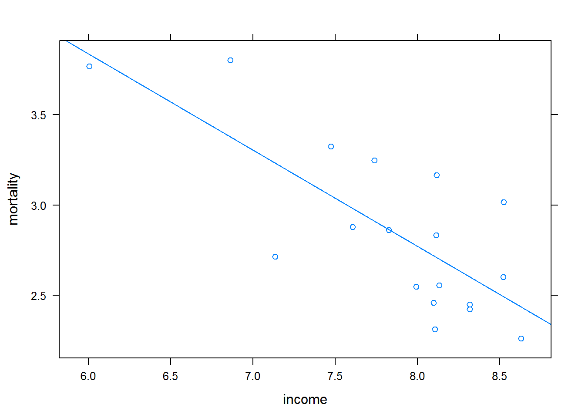
В Европе не хватает экспортеров нефти (вообще ни одного), поэтому рассматривать их смысла нет. Получаем уже известную информацию про income.
ame <- lm(mortality ~ income + oil, data = subset(df, region == "Americas"))
summary(ame)##
## Call:
## lm(formula = mortality ~ income + oil, data = subset(df, region ==
## "Americas"))
##
## Residuals:
## Min 1Q Median 3Q Max
## -0.5207 -0.2077 -0.0764 0.1907 1.1315
##
## Coefficients:
## Estimate Std. Error t value Pr(>|t|)
## (Intercept) 6.4592 0.6859 9.417 1.37e-08 ***
## income -0.4056 0.1057 -3.836 0.00111 **
## oiloil exports 0.2596 0.3029 0.857 0.40211
## ---
## Signif. codes: 0 '***' 0.001 '**' 0.01 '*' 0.05 '.' 0.1 ' ' 1
##
## Residual standard error: 0.4081 on 19 degrees of freedom
## Multiple R-squared: 0.4528, Adjusted R-squared: 0.3952
## F-statistic: 7.86 on 2 and 19 DF, p-value: 0.003256stepAIC(ame)## Start: AIC=-36.66
## mortality ~ income + oil
##
## Df Sum of Sq RSS AIC
## - oil 1 0.12234 3.2870 -37.824
## <none> 3.1646 -36.658
## - income 1 2.45137 5.6160 -26.039
##
## Step: AIC=-37.82
## mortality ~ income
##
## Df Sum of Sq RSS AIC
## <none> 3.2870 -37.824
## - income 1 2.4959 5.7829 -27.395##
## Call:
## lm(formula = mortality ~ income, data = subset(df, region ==
## "Americas"))
##
## Coefficients:
## (Intercept) income
## 6.505 -0.409Америка также считает, что экспорт нефти не играет роли.
xyplot(mortality ~ income, data = subset(df, region == "Americas"), type = c("r", "p"))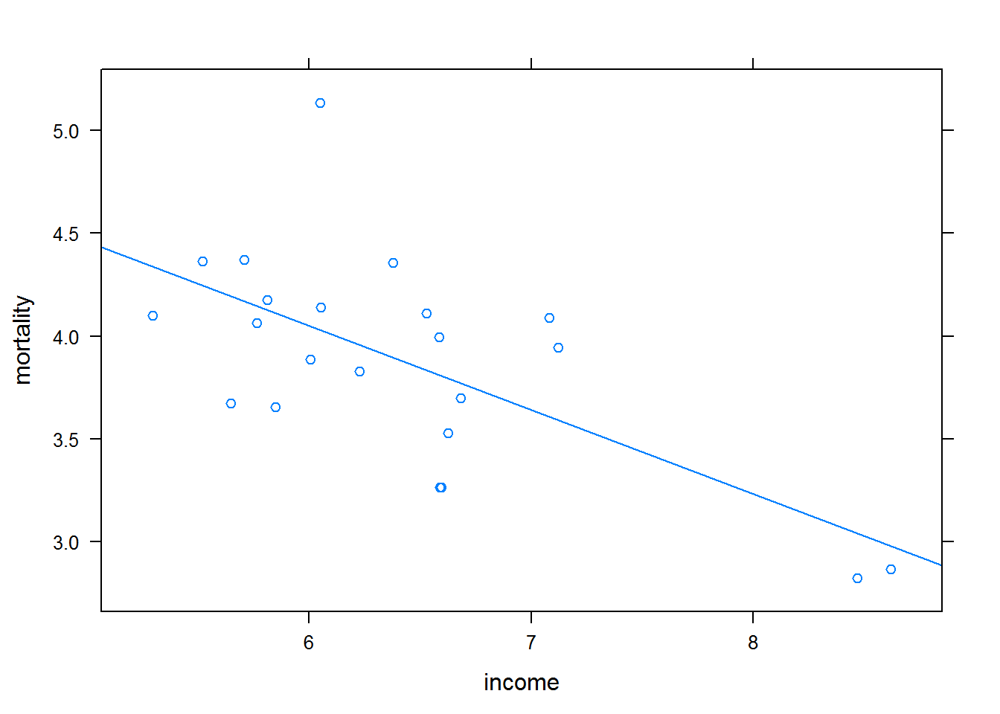
asia <- lm(mortality ~ income + oil, data = subset(df, region == "Asia"))
summary(asia) ##
## Call:
## lm(formula = mortality ~ income + oil, data = subset(df, region ==
## "Asia"))
##
## Residuals:
## Min 1Q Median 3Q Max
## -1.45478 -0.68040 0.03959 0.45544 2.12147
##
## Coefficients:
## Estimate Std. Error t value Pr(>|t|)
## (Intercept) 6.3045 0.8521 7.399 1.22e-07 ***
## income -0.4329 0.1474 -2.937 0.00721 **
## oiloil exports 1.2252 0.5475 2.238 0.03478 *
## ---
## Signif. codes: 0 '***' 0.001 '**' 0.01 '*' 0.05 '.' 0.1 ' ' 1
##
## Residual standard error: 0.8868 on 24 degrees of freedom
## Multiple R-squared: 0.3363, Adjusted R-squared: 0.2809
## F-statistic: 6.079 on 2 and 24 DF, p-value: 0.007311stepAIC(asia) ## Start: AIC=-3.67
## mortality ~ income + oil
##
## Df Sum of Sq RSS AIC
## <none> 18.875 -3.6657
## - oil 1 3.9382 22.813 -0.5492
## - income 1 6.7820 25.657 2.6226##
## Call:
## lm(formula = mortality ~ income + oil, data = subset(df, region ==
## "Asia"))
##
## Coefficients:
## (Intercept) income oiloil exports
## 6.3045 -0.4329 1.2252Азия считает, что всё-таки некоторая значимость у экспорта нефти есть.
xyplot(mortality ~ income, data = subset(df, region == "Asia"), type = c("r", "p"))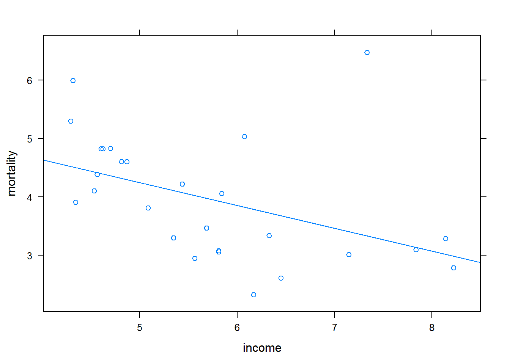
Попробуем добавить взаимных влияний.
l <- lm(mortality ~ income * region * oil, data = df)
summary(l)##
## Call:
## lm(formula = mortality ~ income * region * oil, data = df)
##
## Residuals:
## Min 1Q Median 3Q Max
## -1.64388 -0.26122 -0.00388 0.29936 1.42471
##
## Coefficients: (2 not defined because of singularities)
## Estimate Std. Error t value Pr(>|t|)
## (Intercept) 5.62847 0.71867 7.832 1.09e-11
## income -0.14820 0.14399 -1.029 0.3062
## regionAmericas 0.91847 1.16931 0.785 0.4343
## regionAsia 1.23233 0.89293 1.380 0.1711
## regionEurope 1.39821 1.68176 0.831 0.4080
## oiloil exports -4.93108 1.91698 -2.572 0.0118
## income:regionAmericas -0.27108 0.20244 -1.339 0.1840
## income:regionAsia -0.38314 0.17080 -2.243 0.0274
## income:regionEurope -0.38349 0.24058 -1.594 0.1146
## income:oiloil exports 0.77362 0.30676 2.522 0.0135
## regionAmericas:oiloil exports 4.18722 3.64120 1.150 0.2533
## regionAsia:oiloil exports 0.02117 2.64080 0.008 0.9936
## regionEurope:oiloil exports NA NA NA NA
## income:regionAmericas:oiloil exports -0.61513 0.57392 -1.072 0.2868
## income:regionAsia:oiloil exports 0.23635 0.42504 0.556 0.5796
## income:regionEurope:oiloil exports NA NA NA NA
##
## (Intercept) ***
## income
## regionAmericas
## regionAsia
## regionEurope
## oiloil exports *
## income:regionAmericas
## income:regionAsia *
## income:regionEurope
## income:oiloil exports *
## regionAmericas:oiloil exports
## regionAsia:oiloil exports
## regionEurope:oiloil exports
## income:regionAmericas:oiloil exports
## income:regionAsia:oiloil exports
## income:regionEurope:oiloil exports
## ---
## Signif. codes: 0 '***' 0.001 '**' 0.01 '*' 0.05 '.' 0.1 ' ' 1
##
## Residual standard error: 0.5251 on 87 degrees of freedom
## Multiple R-squared: 0.7442, Adjusted R-squared: 0.706
## F-statistic: 19.47 on 13 and 87 DF, p-value: < 2.2e-16stepAIC(l)## Start: AIC=-117.19
## mortality ~ income * region * oil
##
## Df Sum of Sq RSS AIC
## - income:region:oil 2 0.62123 24.609 -118.61
## <none> 23.988 -117.19
##
## Step: AIC=-118.61
## mortality ~ income + region + oil + income:region + income:oil +
## region:oil
##
## Df Sum of Sq RSS AIC
## <none> 24.609 -118.61
## - income:region 3 1.6119 26.221 -118.20
## - region:oil 2 2.7732 27.383 -111.83
## - income:oil 1 4.4112 29.021 -103.96##
## Call:
## lm(formula = mortality ~ income + region + oil + income:region +
## income:oil + region:oil, data = df)
##
## Coefficients:
## (Intercept) income
## 5.6333 -0.1492
## regionAmericas regionAsia
## 1.2565 1.0998
## regionEurope oiloil exports
## 1.3934 -4.9580
## income:regionAmericas income:regionAsia
## -0.3234 -0.3596
## income:regionEurope income:oiloil exports
## -0.3825 0.7780
## regionAmericas:oiloil exports regionAsia:oiloil exports
## 0.2917 1.4571
## regionEurope:oiloil exports
## NAЗдесь что-то интересное, однако будем осторожны: признаков много, данных мало. Скорее всего, именно поэтому нашлось много закономерностей
l <- lm(mortality ~ income * region , data = df)
summary(l)##
## Call:
## lm(formula = mortality ~ income * region, data = df)
##
## Residuals:
## Min 1Q Median 3Q Max
## -1.46809 -0.26530 -0.02148 0.27478 3.14219
##
## Coefficients:
## Estimate Std. Error t value Pr(>|t|)
## (Intercept) 4.9385 0.6362 7.763 1.06e-11 ***
## income -0.0112 0.1235 -0.091 0.9280
## regionAmericas 1.5661 1.1856 1.321 0.1898
## regionAsia 1.2634 0.8561 1.476 0.1434
## regionEurope 2.0882 1.8422 1.134 0.2599
## income:regionAmericas -0.3978 0.1979 -2.010 0.0473 *
## income:regionAsia -0.3798 0.1580 -2.404 0.0182 *
## income:regionEurope -0.5205 0.2516 -2.069 0.0413 *
## ---
## Signif. codes: 0 '***' 0.001 '**' 0.01 '*' 0.05 '.' 0.1 ' ' 1
##
## Residual standard error: 0.5971 on 93 degrees of freedom
## Multiple R-squared: 0.6464, Adjusted R-squared: 0.6198
## F-statistic: 24.29 on 7 and 93 DF, p-value: < 2.2e-16stepAIC(l)## Start: AIC=-96.52
## mortality ~ income * region
##
## Df Sum of Sq RSS AIC
## <none> 33.152 -96.516
## - income:region 3 2.8279 35.980 -94.248##
## Call:
## lm(formula = mortality ~ income * region, data = df)
##
## Coefficients:
## (Intercept) income regionAmericas
## 4.9385 -0.0112 1.5661
## regionAsia regionEurope income:regionAmericas
## 1.2634 2.0882 -0.3978
## income:regionAsia income:regionEurope
## -0.3798 -0.5205Получилось лучше, чем с учетом экспорта.
Ну и самый простой вариант:
l <- lm(mortality ~ income, data = df)
summary(l)##
## Call:
## lm(formula = mortality ~ income, data = df)
##
## Residuals:
## Min 1Q Median 3Q Max
## -1.66694 -0.42779 -0.02649 0.30441 3.08415
##
## Coefficients:
## Estimate Std. Error t value Pr(>|t|)
## (Intercept) 7.14582 0.31654 22.575 <2e-16 ***
## income -0.51179 0.05122 -9.992 <2e-16 ***
## ---
## Signif. codes: 0 '***' 0.001 '**' 0.01 '*' 0.05 '.' 0.1 ' ' 1
##
## Residual standard error: 0.6867 on 99 degrees of freedom
## Multiple R-squared: 0.5021, Adjusted R-squared: 0.4971
## F-statistic: 99.84 on 1 and 99 DF, p-value: < 2.2e-16stepAIC(l)## Start: AIC=-73.94
## mortality ~ income
##
## Df Sum of Sq RSS AIC
## <none> 46.685 -73.941
## - income 1 47.083 93.769 -5.503##
## Call:
## lm(formula = mortality ~ income, data = df)
##
## Coefficients:
## (Intercept) income
## 7.1458 -0.5118Итак, вывод к которому я пришел: * Сложные закономерности находятся, но данных мало * Скорее всего зависимость от income или income * region - то, что нужно для хорошей модели.